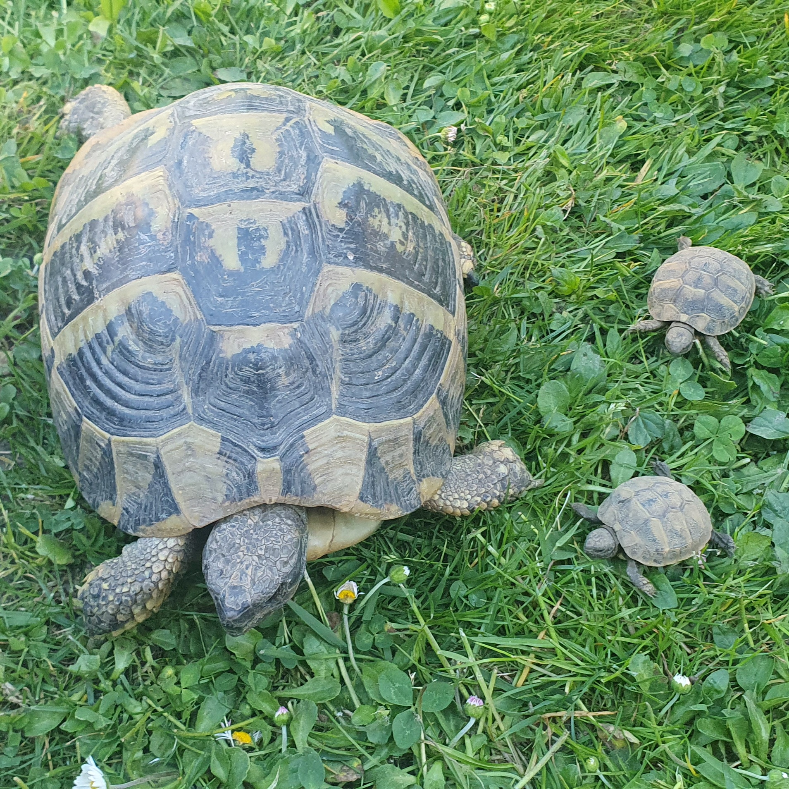
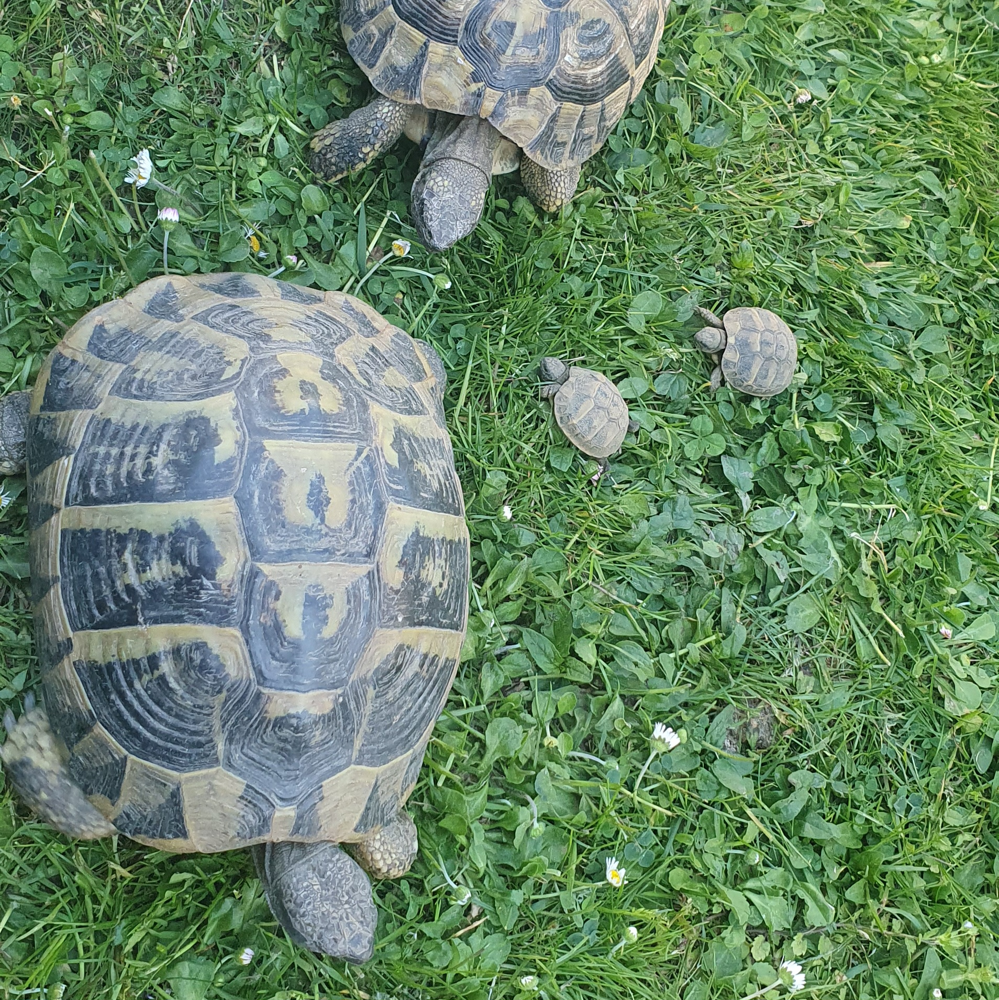
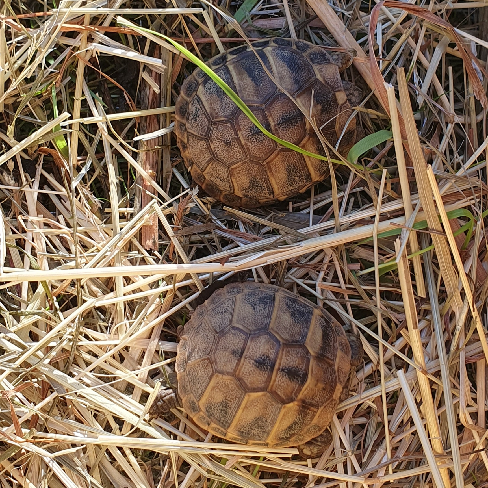
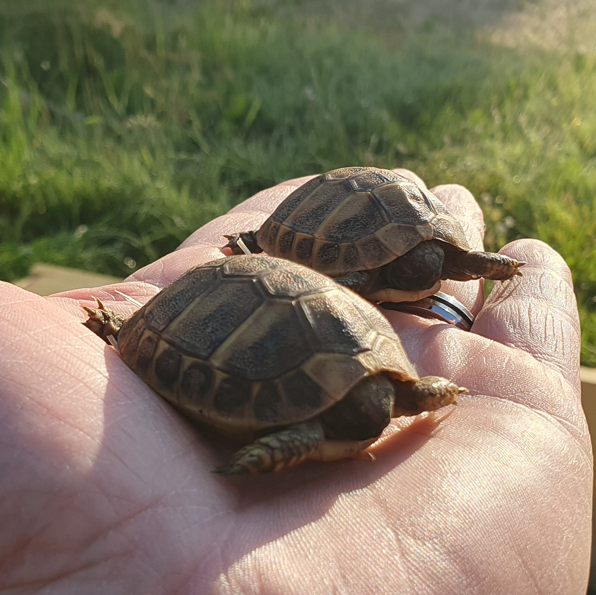

Espèce : Tortue d’Hermann
Sexe : Indéterminé (trop jeune)
Né(e) le : 29/03/2025
Compagnon : Flash
Benji est une jeune tortue encore en pleine croissance. À cet âge, il est encore impossible de déterminer s’il s’agit d’un mâle ou d’une femelle, ce qui ajoute un petit mystère autour de sa personnalité.
Benji partage son espace avec Flash, son compagnon de toujours. Tous les deux vivent ensemble dans leur parc, où ils passent leur temps à explorer, se reposer au soleil et évoluer à leur rythme.
Comme toutes les tortues d’Hermann, Benji aime prendre son temps. Entre siestes au soleil et petites promenades, sa vie est rythmée par la tranquillité et la patience.
Sur certaines photos, Benji apparaît avec Flash et leurs parents. Une belle image de famille qui montre déjà l’importance du groupe, même chez ces animaux discrets.



